Mauricio Dipablo
Soy estudiante de Ingeniería Electromecánica enfocado en Data Analytics y Business Intelligence. Me interesa transformar datos en información clara que ayude a entender problemas, detectar oportunidades y tomar mejores decisiones.
Trabajo principalmente con Power BI y SQL, combinando análisis, visualización y pensamiento lógico para desarrollar soluciones de datos.
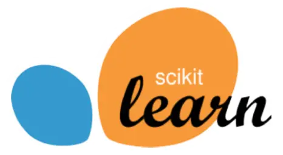
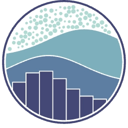
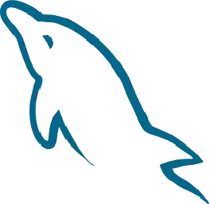
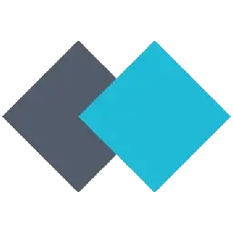
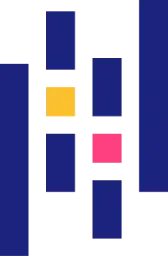
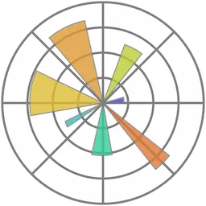
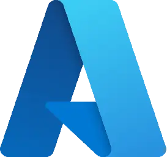
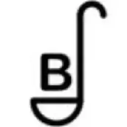
Análisis end-to-end de más de 100.000 pedidos en marketplaces de Brasil. Reestructuración en MySQL, compresión del dataset geográfico (-98%) y mapas interactivos.
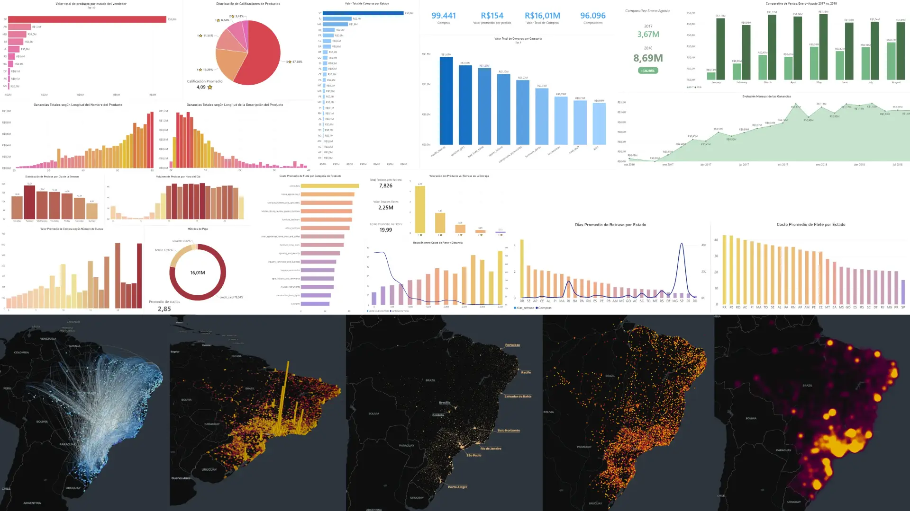
Modelo de Machine Learning entrenado para identificar transacciones fraudulentas. Manejo de datasets desbalanceados, entrenamiento de algoritmos y evaluación estadística.
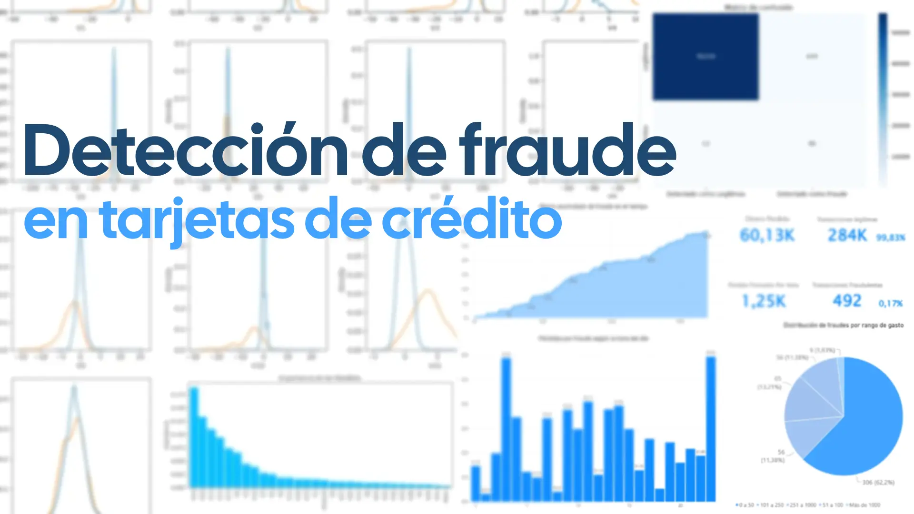
Una red neuronal artificial capaz de analizar las curvas de luz de sistemas estelares. El modelo identificará las sutiles caídas en el brillo de las estrellas ocasionadas por tránsitos planetarios para predecir si hemos encontrado un nuevo exoplaneta.
[ Próximamente ]